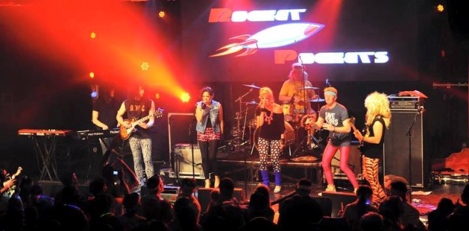

Maria's Winter Vacation
Kellogg School of Management
December 2015 - January 2016

Ski Trip
Park City, Utah
Ski Trip is a magical Kellogg tradition, in which nearly 900 students and JVs infiltrate a ski resort adorn with costumes, neon ski gear, and ice sculptures.
Every night features a theme and costume. This year's themes were:
- Game On! My costume: King's Cup
- Jurassic Park City. My costume: Flintstones
- Erotic Aquatic. My costume: A sea anemone. Solon was a clownfish. We're in a symbiotic relationship. (Note: This is probably my best costume ever created. I even brought a balloon pump with me!)
- Onesie Day. My costume: Eyeor onesie
- 80s Night. I performed with the Rocket Pockets on the Park City Live stage!
- Animal House. My costume: A toga made from an Angry Birds bedsheet. Solon's toga was made of My Little Pony print.


See all Ski Trip photos on my Facebook album.
Christmas
Iowa City, Iowa
My first Christmas with Solon's family in Iowa! The entire family was home for the holidays, include the two mastiffs, Nyx and Gideon!


And we made polish sausage...from scratch!

Tropical Vacation
Island of Kauai, Hawaii
For the last week of winter break, we went with my family to Kauai. We went on hikes, lounged at the beach, and...
Solon and I got SCUBA certified!

Now back to school